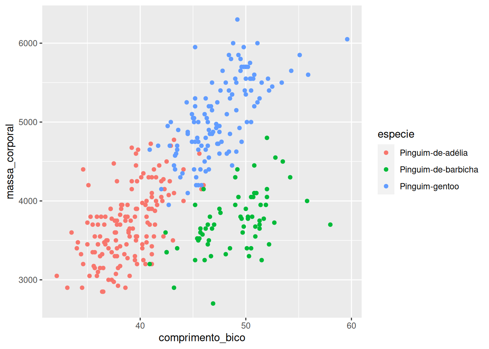
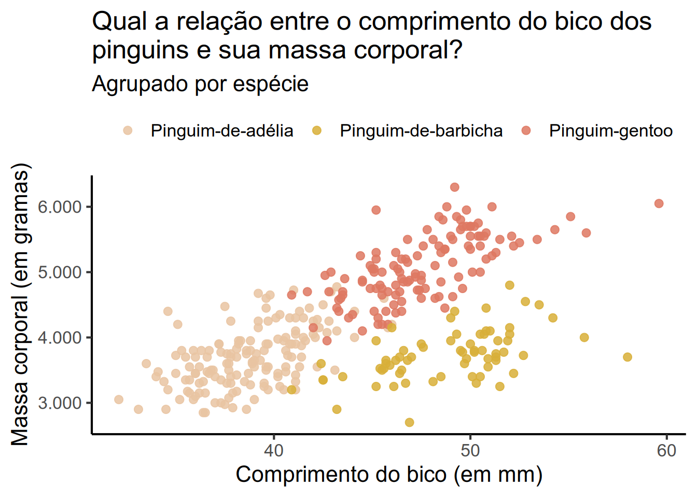
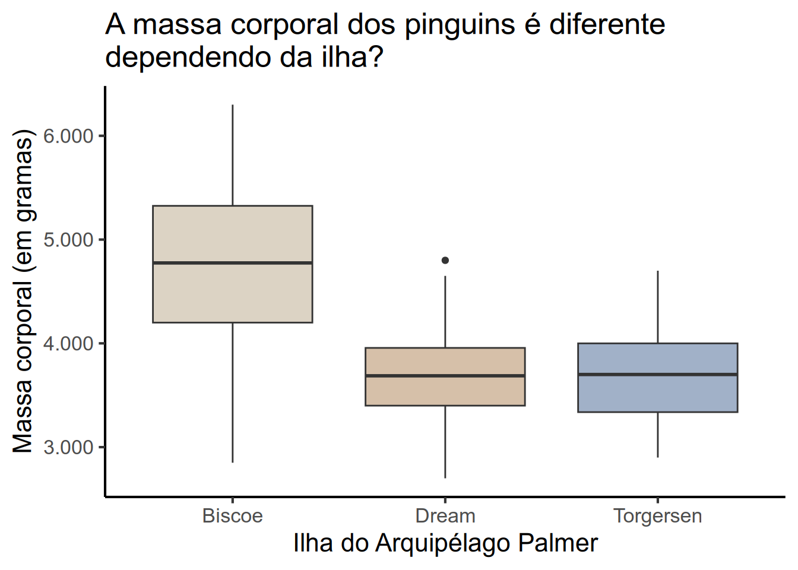

library(dados)
library(ggplot2)
pinguins |>
ggplot(aes(x = comprimento_bico,
y = massa_corporal,
color = especie)) +
geom_point()
pinguins do pacote dados, crie:Segue uma possível solução abaixo:
labs() e família theme_[estilo_do_tema]()).O segundo exercício solicitava que vocês escolhessem algum dos gráficos elaborados no exercício anterior e aplicasse alguns ajustes (do seu gosto) para deixá-lo mais visualmente atraente ou legível. Dentro do contexto do gabarito, tentarei explorar como podemos melhorar cada um dos gráficos elaborados nas etapas anteriores.
library(dados)
library(ggplot2)
pinguins |>
ggplot(aes(x = comprimento_bico,
y = massa_corporal,
color = especie)) +
geom_point(size = 2.5,
alpha = 0.85) +
labs(x = "Comprimento do bico (em mm)",
y = "Massa corporal (em gramas)",
title = "Qual a relação entre o comprimento do bico dos\npinguins e sua massa corporal?",
subtitle = "Agrupado por espécie") +
theme_classic(16, "Arial") +
scale_y_continuous(labels = \(x) format(x, big.mark = ".")) +
ghibli::scale_color_ghibli_d("PonyoMedium", -1) +
theme(legend.position = "top",
legend.title = element_blank())
pinguins |>
ggplot(aes(x = ilha, y = massa_corporal, fill = ilha)) +
geom_boxplot() +
ghibli::scale_fill_ghibli_d("TotoroLight", -1) +
scale_y_continuous(labels = \(x) format(x, big.mark = ".")) +
theme_classic(16, "Arial") +
labs(x = "Ilha do Arquipélago Palmer",
y = "Massa corporal (em gramas)",
title = "A massa corporal dos pinguins é diferente\ndependendo da ilha?") +
theme(legend.position = "none")